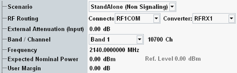

The following parameters configure the RF input path.
See also: "Connection Control (Measurements)"

This software version supports only a standalone scenario. The measurements are used in non signaling mode.
Remote command:Selects the input path for the measured RF signal, i.e. the input connector and the RX module to be used.
Defines the value of an external attenuation (or gain, if the value is negative) in the input path. The power readings of the R&S CMW are corrected by the external attenuation value.
The external attenuation value is also used in the calculation of the maximum input power that the R&S CMW can measure.
If a correction table for frequency-dependent attenuation is active for the chosen connector, then the table name and a button are displayed. Press the button to display the table entries.
Center frequency of the RF analyzer. Set this frequency to the frequency of the measured RF signal to obtain a meaningful measurement result. The relation between operating band, frequency and channel number is defined by 3GPP (see "Operating Bands").
- Enter the frequency directly. The band and channel settings can be ignored or used for validation of the entered frequency. For validation, select the designated band. The channel number resulting from the selected band and frequency is displayed. For an invalid combination, no channel number is displayed.
- Select a band and enter a channel number valid for this band. The R&S CMW calculates the resulting frequency.
Defines the nominal power of the RF signal to be measured. Configure it as peak output power at the NodeB expected during the measurement interval.
The "Ref. Level" is calculated as follows: Reference Level = Expected Nominal Power + User Margin
The actual input power at the connectors must be within the level range of the selected RF input connector. If all power settings are configured correctly, the actual input power is calculated as the "reference level" minus the "external attenuation (input)" value). Refer to the data sheet.
Remote command:Margin that the R&S CMW adds to the "Expected Nominal Power" to determine its reference power ("Ref. Level"). The "User Margin" is typically used to account for the known variations of the RF input signal power, e.g. the variations due to a specific channel configuration.
The appropriate values depend on the configuration of the DL WCDMA signal, e.g. on the active channels and gain factors. For a 12.2 kbit/s reference measurement channel (RMC), a value of 5 dB is appropriate.
Remote command: